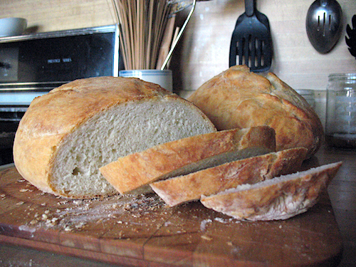

Ciabatta with Poolish
This is my favorite bread recipe and the one that got me into bread
baking. I wrote this up, but the recipe is originally from Jeffrey
Hamelman's book "Bread". Simple ingredients and takes a really long time
- perfect if you're stuck at home. :)
Quick links
FAQ |
Ingredients |
Instructions |
Notes |
Variations
Frequently asked questions
You'll be tempted to skip this. Please don't! 🙏
What is “Poolish”?
This bread uses a “pre-ferment” called poolish. Apparently the technique
originated in Poland. The pre-ferment is easy to make, but needs time to
develop, usually overnight. You add it to the final dough to give this
bread a rich, acidic flavor usually only achievable in sourdoughs.
Why are the ingredients given in weights?
Measuring by weight significantly reduces your chance of failure. You
will be very disappointed if you fail after many hours of effort.
How do I knead this bread?
This bread involves no kneading. We only fold it. Kneading prevents the
bread from becoming “full” because all of the gas pockets will be
crushed and sealed. Folding releases gases from the bread that otherwise
inhibit the yeast, but doesn’t crush all these pockets.
How do you fold? You take one end of the bread and fold it over - then
pinch the ends to keep them together. Rotate the bread 90 degrees and
repeat.
See
bakepedia
for images.
How do I steam my oven?
I steam my oven by putting a glass container, full of very hot water,
into the bottom of the oven when I start to preheat it. By the time you
add the dough, this water should be boiling and filling the oven with
steam.
Ingredients
Poolish
Try your best to use real bread flour. King Arthur brand is the best
I've been able to regularly find.
- 9.6 oz bread flour (2 1/4 cups)
- 9.6 oz water (1 1/4 cups)
- 1/8 tsp instant dry yeast
Final dough
- 22.4 oz bread flour (5 1/8 cups)
- 13.8 oz water (1 3/4 cups)
- 0.13 oz instant dry yeast (1 1/4 tsp)
- 1 Tablespoon salt
- All of the poolish above
Instructions
12-16 hrs for Poolish, ~5 hrs for bulk
-
Make the poolish Disperse the yeast in water, add the flour,
mix until smooth. Cover with plastic and let stand for 12-16 hrs (!)
at about 70F.
-
Mixing Add all the ingredients to the mixing bowl, including
the poolish. In a spiral mixer, mix on first speed for 3 minutes. If
necessary, correct hydration by adding flour or water. Finish mixing
on second speed for 3.5 to 4 minutes. The double will be rather loose
and sticky, but when tugged on some definite dough strength should be
noted - there should be some muscle to the dough. Desired dough
temperature 75F
-
Bulk fermentation (3 hrs) After dipping your handsin flour,
fold the dough twice, after 1 hour of bulk fermentation and again
after 2 hrs. Don't go overboard on the folding.
-
Dividing and shaping Measure the weight of the dough. Put the
dough onto a generously floured surface. Cover your hands with flour.
Cut the dough in half by weight - each will be a loaf. Fold each loaf.
-
Final fermentation Transfer the bread to a baking pan coated
with a generous quantity of a coarse grain like oatmeal. Let rise for
1.5 hrs at 75F.
-
Baking Use normal steam, 460F for 30 minutes. I usually check
on my bread by turning on the oven light every 10 minutes.
Notes
When to cut the bread
If you cut the bread too early after removing from the oven, you risk
releasing alot of the moisture and accelerating the bread's inevitable
march towards staleness. Wait 15 minutes to let the bread equalize in
temperature.
Storage
Don't refrigerate your bread. Freeze it. This helps to prevent
staleness.
Scoring
You can score your bread to increase volume. A simple razor blade or
sharp knife will suffice to do this. Experiment.
Pan stickage
I always put a coarse grain like oatmeal on the pan. It will have next
to zero effect on eating quality.
Variations
-
Add pitted calamata olives. They provide additional moistness, oil,
and saltiness.
- Add raisins. They are sweet and plump up inside.
- Add a tablespoon of honey. Who doesn't like honey?
-
Add a tablespoon of olive oil. I find this makes the dough more
compliant and rich.
-
Add seeds. They provide additional flavor, texture, and fiber. You can
put them in the final dough or wet them and put them atop the final
loaves.
-
Add some whole wheat flour. Whole wheat flour adds flavor, but makes
it harder to control hydration.
Quick links
FAQ |
Ingredients |
Instructions |
Notes |
Variations